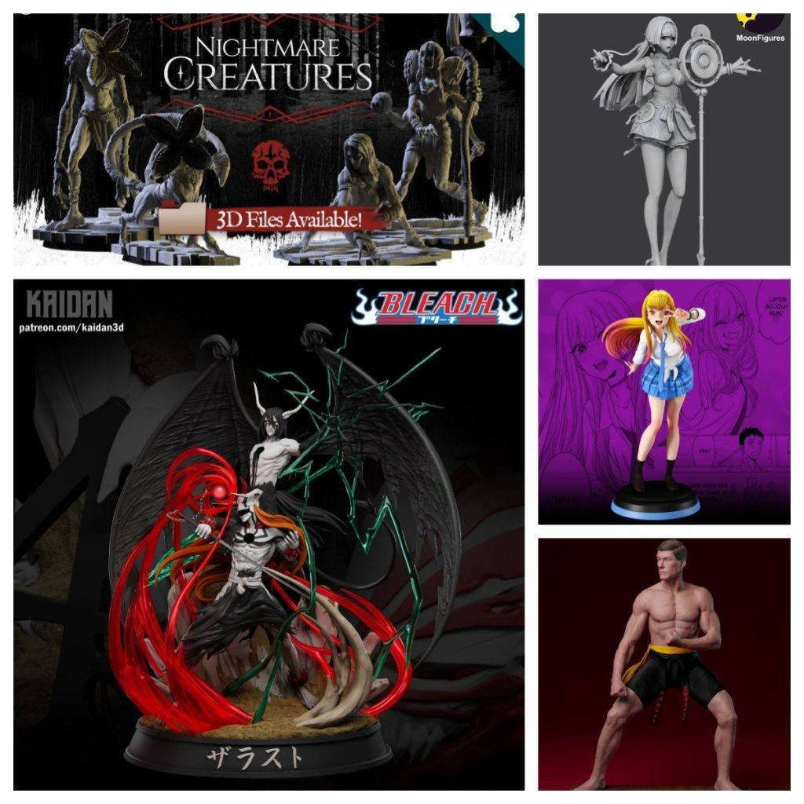
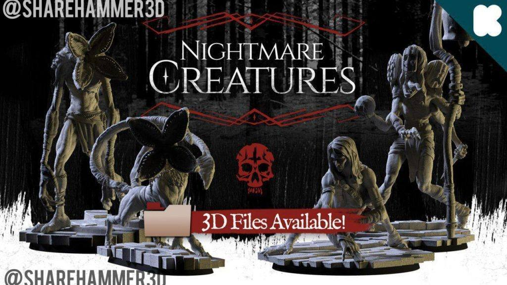
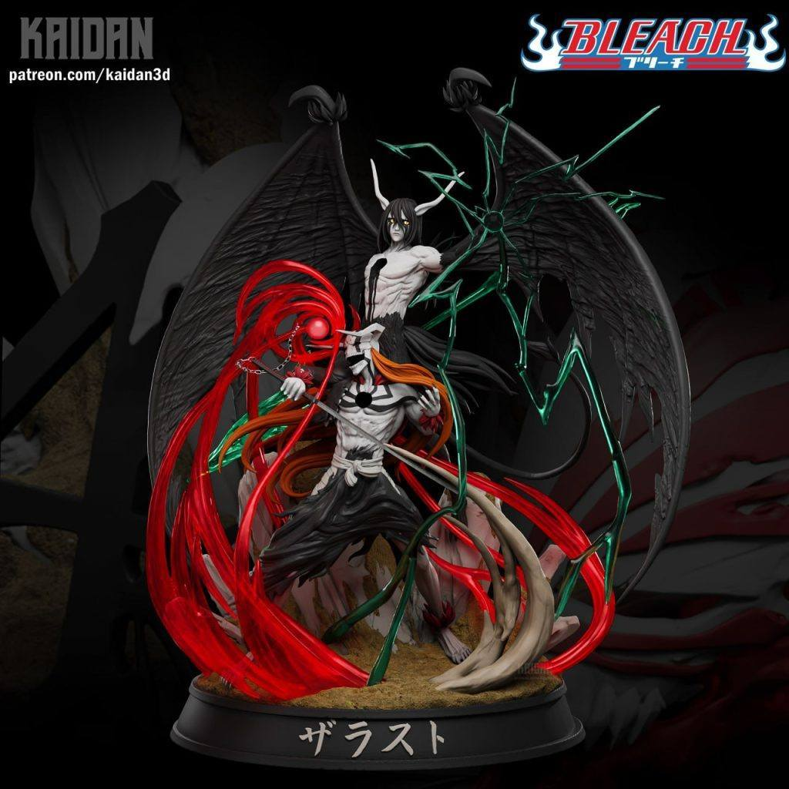
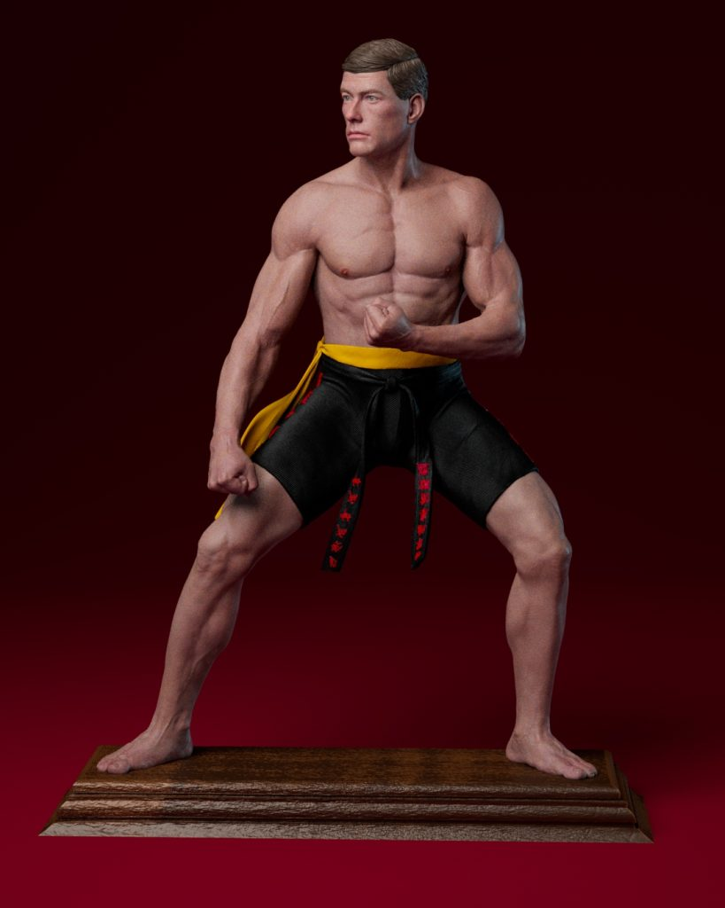

2025年06月06日STl图纸文件分享
提取码
3427
乌尔奇奥拉对战黑崎一护，动态激烈还原度高，是死神粉丝必收的一组对战场景；
喜多川海梦 silver 版本造型可爱，服装与神态精致还原，细节满满；
耀嘉音服饰独特，姿态优雅，人物塑造富有艺术感；
噩梦鬼魅战棋题材新颖，棋子造型兼具恐怖与奇幻，适合微缩场景爱好者；
弗兰克·杜克还原经典搏击动作，肌肉细节与动态表现力都十分出色。




https://pan.baidu.com/s/1T30dDo6hu6ZMHvhlfTglcg 提取码: 3427
以上内容仅供个人使用（非商用）
ONLY for PERSONAL (NON-COMMERCIAL) use.
加群获得更多免费模型！